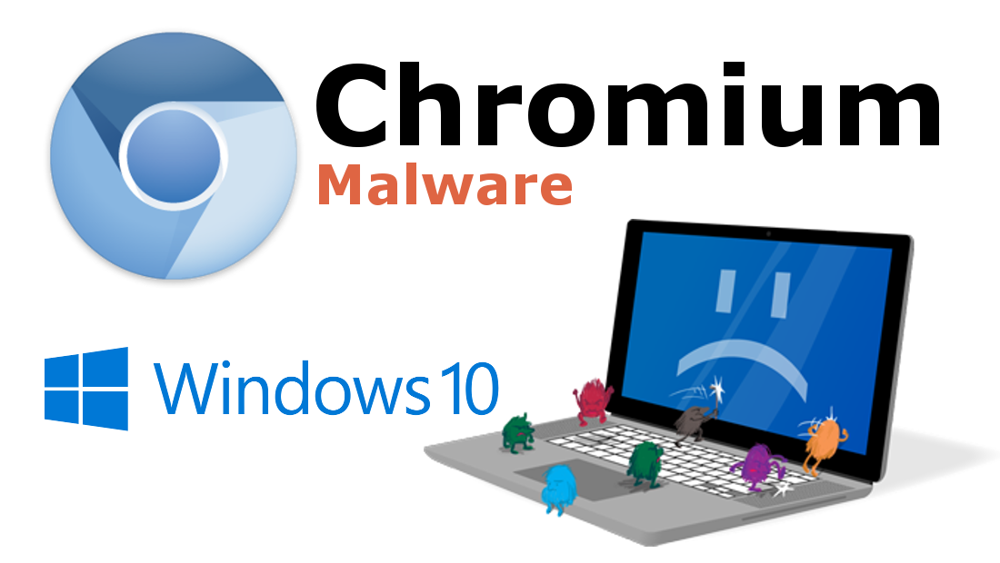

Chromium is an open-source Web browser project started by Google, to provide the source code for the proprietary Google Chrome browser. The two browsers share the majority of code and features, though there are some minor differences in features, logos, and they have different licensing.
The Chromium Project takes its name from the element chromium, the metal from which chrome plating is made. Google's intention, as expressed in the developer documentation, was that Chromium would be the name of the open-source development project and that the final product's name would be Chrome; however, other developers have taken the Chromium code and released versions under the Chromium name.
One of the major aims of the project is for Chromium to be a tabbed window manager, or shell for the Web, as opposed to it being a traditional browser application. The application is designed to have a minimalist user interface. The developers state that it "should feel lightweight (cognitively and physically) and fast".
But why is it called a Malware??
Being an opensource web-browser, hackers get the entire Source code of the software and which allows them to embed Trojens and Logger softs. into it!
It appears to be just like a normal web browser but in background, it always runs some kind of malicious activities like it can track your usages like your Credit Card Details your Bank Account Details
It can even gain remote access to your computer and do malicious tasks like performing a DOS attack on other computer!!

This virus can make a way to your computer if you install some pirated stuffs or installed it from an untrusted website..
Prevention you can take to ensure that the virus can't make way to your computer :
- Don't Install pirated softwares, rather install them only from official websites and support the developers as they have spend a lot of money and time to make them!
- There is a saying that goes, “Prevention is better that cure”, the same principle applies to computer virus. It is better to protect your computer and prevent any malicious software from infecting it than removing the infections.
But, What if I am already affected by the virus??
Well, if you are a little bit experienced with the console then you should do as follows:
- Open CMD by Winkey + R and type cmd and hit the enter key!
- Type "rmdir < location of the folder of Chromium installation >"